Nyzo version 605 (commit on GitHub) changes the lottery to use IP address, using a constrained linear distance between addresses to adjust probability.
This version affects the verifier only. This version fulfills delivery for NTTP-7.
The new calculation converts the IP address to an integer value in the range [0 - 4294967295]. The IP address 0.0.0.0 corresponds to 0 and the IP address 255.255.255.255 corresponds to 4294967295. Some other values, for illustration, are:
0.0.0.0: 0 0.0.0.1: 1 0.0.0.255: 255 0.0.1.0: 256 0.0.1.255: 511 0.0.2.0: 512 0.0.2.255: 767 0.0.255.255: 65535 0.1.0.0: 65536 0.255.0.0: 16711680 127.255.255.255: 2147483647 128.0.0.0: 2147483648 255.255.255.255: 4294967295
Or, put more simply, the IP address is interpreted as a 4-byte unsigned integer in big-endian byte order.
Of course, large ranges of the IP address space are inaccessible to potential verifiers. This is handled appropriately by the lottery logic.
The IP addresses in the lottery are depicted in the following image. The image is 1024 pixels wide, and each pixel represents an equally sized partition of the IPv4 space, with address 0.0.0.0 on the far left and 255.255.255.255 on the far right.
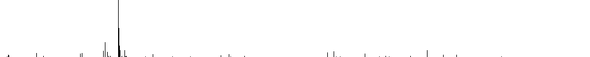While this image illustrates the clustering of IP addresses, it is only looking at one scale of the problem space. Addressing only the clustering apparent in this image would ignore some clustering at finer scales.
The use of a linear value space for IP addresses naturally places closely spaced IP addresses at a disadvantage. However, it provides too much of an advantage to certain IP addresses. So, instead of calculating the distance to IP addresses, constrained ranges of IP addresses are hashed, and the distance in the hash space is used to determine the winner.
All of the changes in this version take place in NewVerifierQueueManager. The maximumIpValueInterval determines the maximum distance between two IP addresses that will contribute to an increased probability of selection.
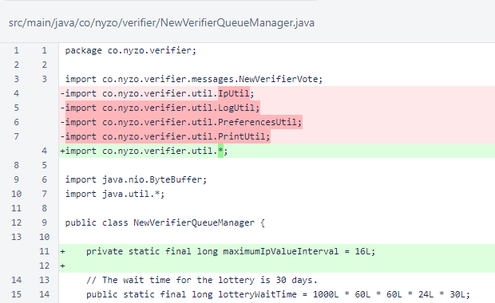The old logic for selecting the winning node in the lottery was replaced with the linear-IP selection logic. The selection logic is encapsulated in the winningNodeForCycleHash() method.
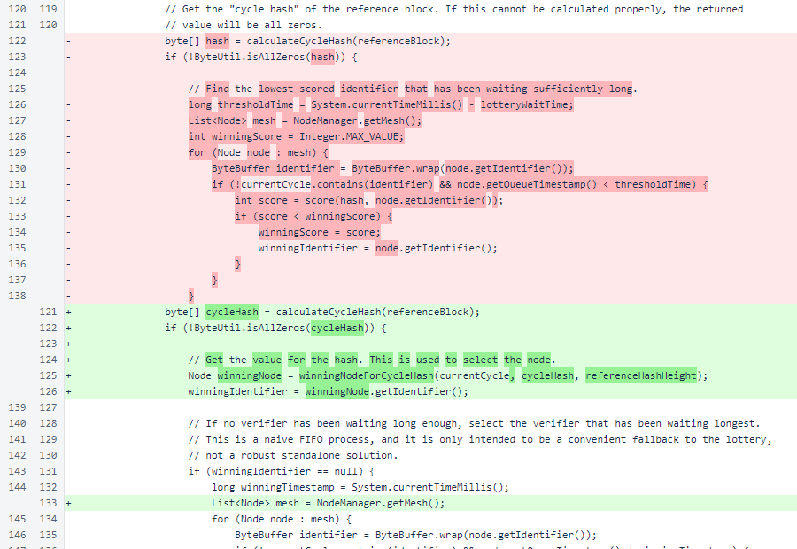The winningNodeForCycleHash() method first calculates integer (long, to avoid issues related to Java's lack of a 4-byte unsigned integer) values for all IP addresses in the lottery, storing the nodes in rawValueToNodeMap, which is keyed on these values.
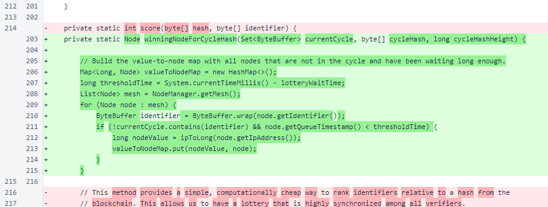After building the map, the values are sorted ascending. Nodes get entries into the lottery based on their IP addresses and half of the IP addresses in both directions, of the linear space. The maximumIpValueInterval is imposed to ensure that large gaps in the address space do not provide excessive lottery entries to the nodes bordering those gaps.
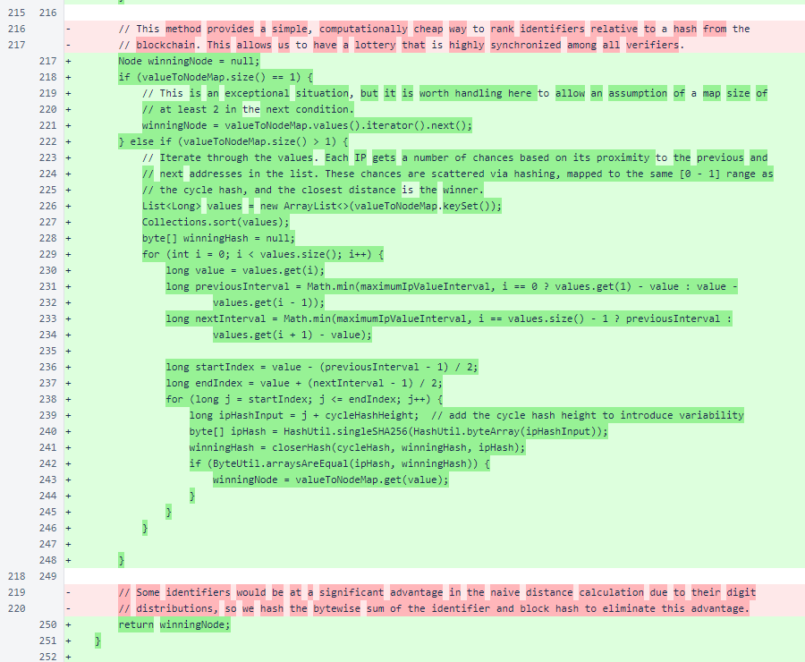The ipToLong() method maps the IP address space to the [0 - 4294967295] range.

The closerHash() method determines which of two hashes are closer to the reference hash. The hashes are treated as 32-byte big-endian integers.
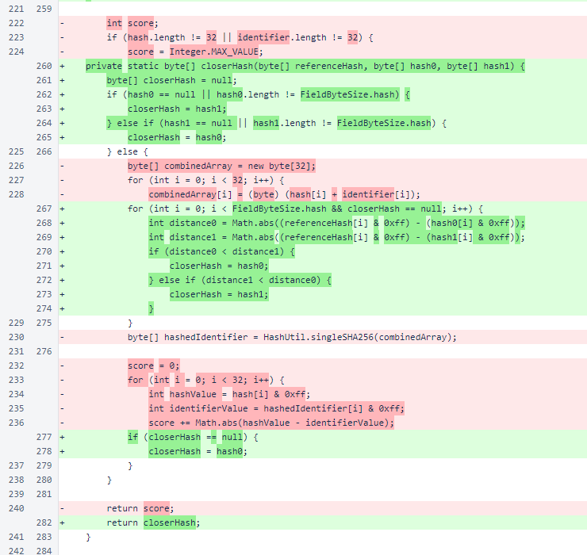This selection logic works at the finest scale, controlling probability by modifying distances between pairs of IP addresses. However, the effects are seen at all scales. Looking back to the graph of IP addresses, the counts within bins also represent relative probabilities of entry from each bin when all IP addresses are afforded equal probability.
Under the new logic, the relative probability of entry from each bin can be calculated by looking at the sum of the space the each bin occupies in the compressed space. This results in higher entrance probabilities for many of the sparsely populated bins.
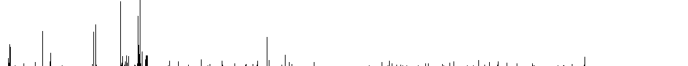Simulating a winner 10,000 times with the new logic consistently shows a distribution that is in line with these probabilities. Each image represents a different set of 10,000 simulated lottery winners.
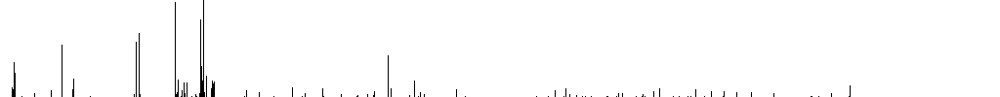 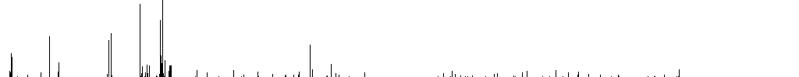 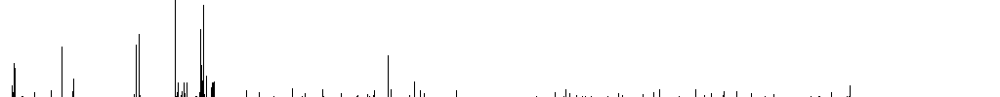Remember that each bin represents 1/1024 of the entire IP address space, which is over 4 million potential addresses per bin. The new peak is a bin that contains 447 IP addresses with an average constrained gap of 15.7, just under the maximum of 16 defined by maximumIpValueInterval in NewVerifierQueueManager.
If we zoom in and create images of the same size from single bins in the original image, each bin in the resultant image represents 4,096 IP addresses. For this, we will examine bins 207, 216, 383, 424, 579, and 712. These are marked in the following image of lottery IP distribution.
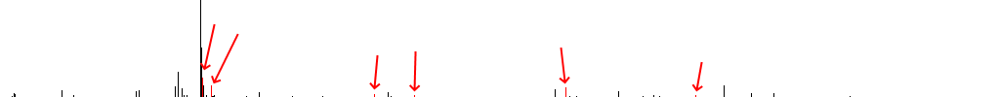The same bins are marked in the following image of lottery probability.
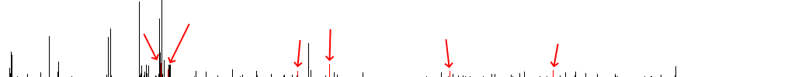The following images show the distribution/unmodified probability, followed by the modified probability, for bin 207.
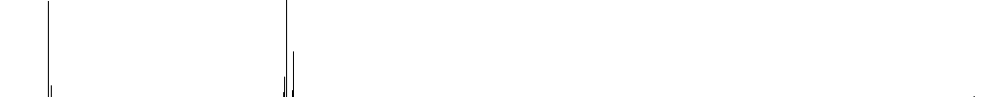 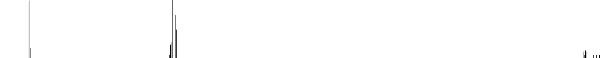The following images show the distribution/unmodified probability, followed by the modified probability, for bin 216.
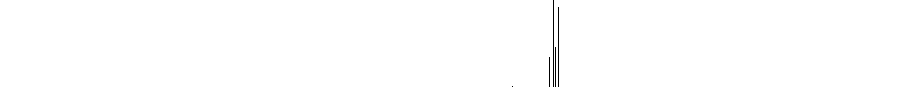 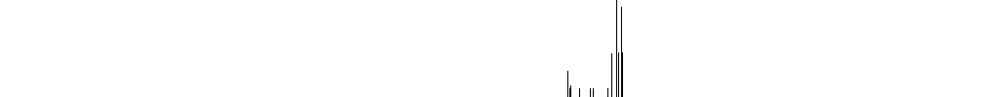The following images show the distribution/unmodified probability, followed by the modified probability, for bin 383.
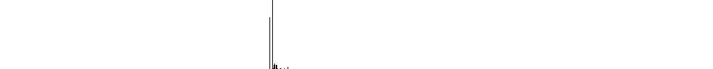 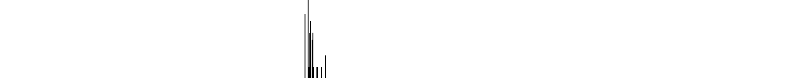The following images show the distribution/unmodified probability, followed by the modified probability, for bin 424.
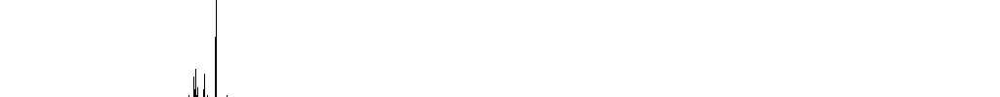 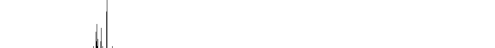The following images show the distribution/unmodified probability, followed by the modified probability, for bin 579.
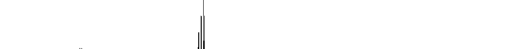
The following images show the distribution/unmodified probability, followed by the modified probability, for bin 712.
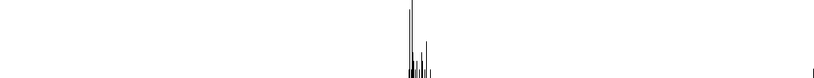In all of these images, we see emergence of bins with exceptionally small unmodified probabilities to represent substantial combined probabilities after modification. So, we see not just positive effects on diversity at the widest scale, we also see positive effects at a moderate scale, while the logic is implemented on the finest scale.
Our preferred selection logic maps both the cycle hash and the IP addresses to linear decimal values in the [0.0 - 1.0] range. It then collapses the linear IP address space to impose a maximum interval between addresses, maps the cycle hash value to the collapsed space, and finds the closest IP address in this space to the mapped hash value.
This logic is especially desirable because it is easy to understand and visualize, and it also provides much more freedom in adjusting maximumIpValueInterval. In the current logic, increasing maximumIpValueInterval increases computational burden. In the preferred logic, the value of maximumIpValueInterval does not affect computational burden.
This current logic is a modification of the preferred concept that is less vulnerable to vote scattering due to information differences among verifiers. In the preferred logic, stacking of the collapsed space results in a single information difference affecting the positions of all subsequent verifiers in the space.
Our preferred logic will be implemented when/if information regarding the out-of-cycle verifier pool is stored on the blockchain and fully consistent among all verifiers.